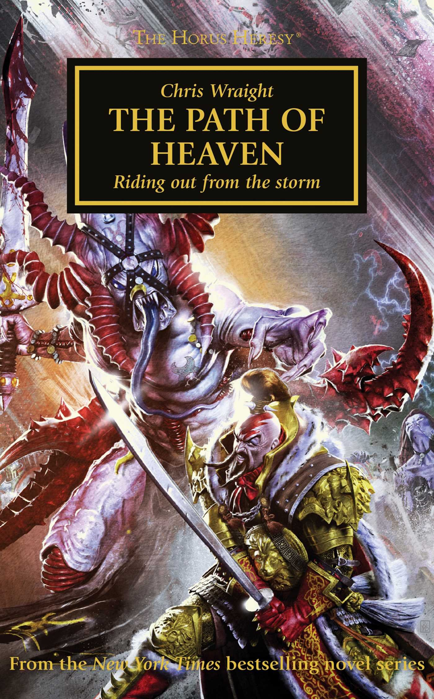

THE PATH OF HEAVEN

Author: Chris Wraight
Format: Novel
Years of fighting have worn down the White Scars, and Jaghatai Khan needs a route to Terra before the final battle. His Stormseers seek a way through enemy forces and the dangers of the warp.
Introduction reviewed against Black Library’s description on 2026-09-27. The publisher page may contain spoilers.
Publication facts: publisher source, checked 2026-09-26.
Open this work in the interactive Archive to track reading progress and explore related works.